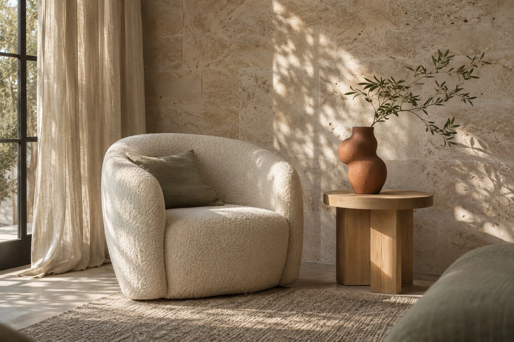
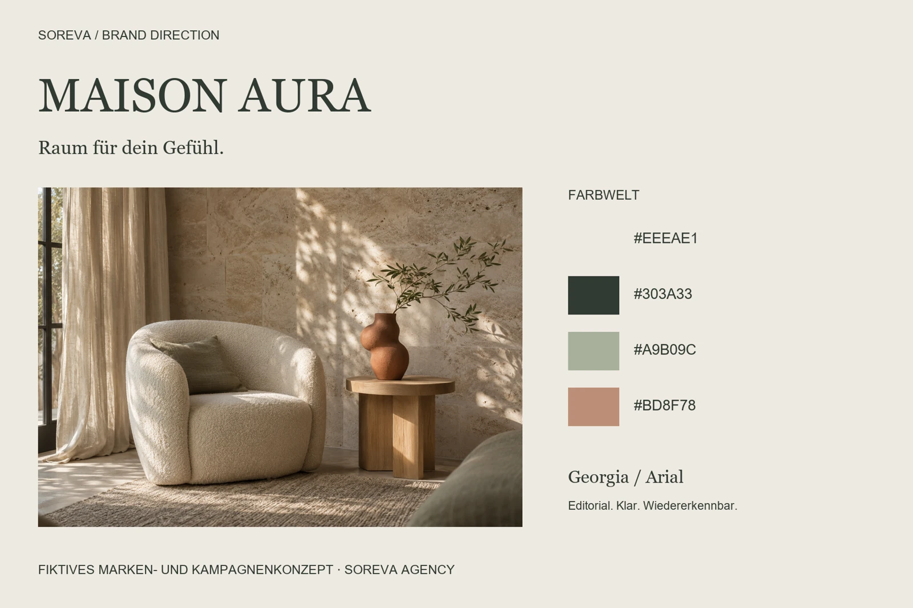
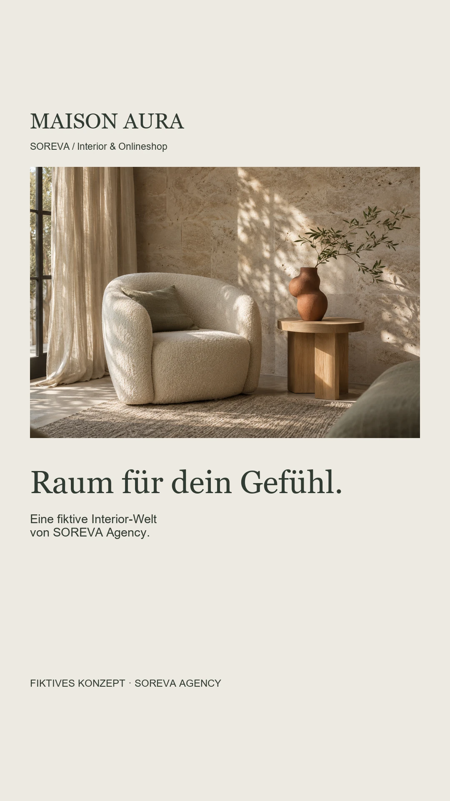
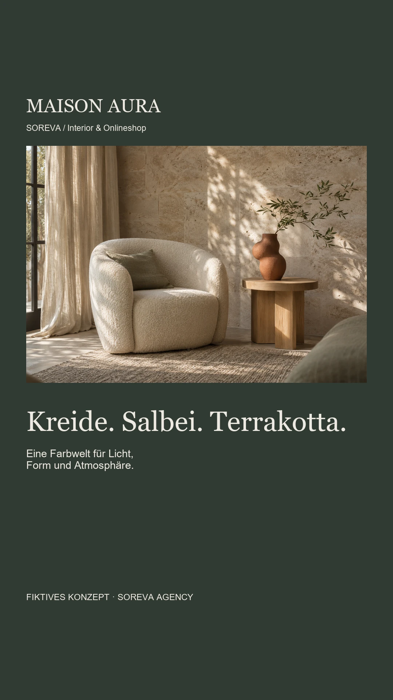

Interior & Onlineshop / Markenidentität & Social Media
MAISON AURA
Eine Interior-Markenwelt, die Räume erzählen lässt.
Fiktive, selbstinitiierte Konzeptarbeit von SOREVA Agency. Kein Kundenauftrag. KI-generierte Bildmotive; keine real erhältlichen Produkte oder Angebote.

01 / Ausgangspunkt
Eine Idee mit Richtung.
Wie präsentiert ein fiktiver Interior-Onlineshop seine gestalterische Richtung, ohne ausgedachte Produkte, Preise oder Materialeigenschaften als echtes Sortiment darzustellen?
Gestalterisches Ziel: ein konsistenter Auftritt von der Markenwelt bis zu den digitalen Kontaktpunkten.
Gedachte Zielgruppe: Menschen mit Interesse an ruhigen Wohnwelten, natürlichen Farbstimmungen und klarer visueller Orientierung beim Entdecken von Interior-Ideen. Diese Einordnung ist eine konzeptionelle Annahme.
02 / Kreative Leitidee
Raum für dein Gefühl
Räume werden über Licht, Proportion und Atmosphäre erzählt. Salbeigrün, Kreide und Terrakotta geben MAISON AURA eine eigenständige, architektonische Identität.
Umfang: Markenrichtung, typografische Wortmarke, Farb- und Typografiesystem, fotografische Bildrichtung, drei Feed-Posts, drei Story-Seiten und Website-Präsentation.
03 / Markenidentität
Farbe. Schrift. Atmosphäre.
Eine eigenständige visuelle Welt mit wiederkehrenden Gestaltungsprinzipien. Die Wortmarke und Headlines nutzen Georgia, erklärende Texte Arial.

04 / Gestaltungsentscheidungen
Ein System, das zusammenpasst.
- Große editoriale Überschriften treffen auf klare Raster. Die Bildflächen erhalten Raum, damit Proportionen und Licht wirken.
- Dunkles Salbeigrün ersetzt das klassische Schwarz. Terrakotta verbindet die Farbwelt mit der räumlichen Bildidee.
- Die Website zeigt eine Shop-Gestaltungsrichtung mit Themenwelten. Warenkorb, Preise und Kaufversprechen werden im Portfolio bewusst nicht simuliert.
05 / Social Media
Wiedererkennung im Alltag.
Der Feed führt vom Markenauftakt über die Gestaltungsprinzipien zum Kampagnenmoment. Die Story übersetzt dieselbe Idee in eine kurze Sequenz. Jedes Motiv trägt einen sichtbaren Konzepthinweis.
Instagram-Feed


Dreiteilige Story





06 / Website-Gestaltungsrichtung
Räume mit
eigenem Gefühl.
Ein fiktives Interior-Konzept über Licht, Form und die Atmosphäre eines Zuhauses. Entworfen als Markenwelt für einen Onlineshop.
Ergebnis der Gestaltung
Entstanden ist ein zusammenhängendes Designsystem mit plattformgerechten Social-Media-Motiven, Brandboard und Website-Präsentation. Das Konzept zeigt die gestalterische Herangehensweise von SOREVA.
Es wurde keine reale Kampagne ausgespielt. Reichweite, Umsatz und Conversion wurden nicht erhoben. Die Motive sind keine Produktdokumentation; ein funktionsfähiger Shop und reale Geschäftsangebote sind nicht Bestandteil der Arbeit.
DEINE MARKE / DEIN NÄCHSTER SCHRITT
Eine eigene Markenwelt entwickeln?
Erzähl uns von deinem Vorhaben. Gemeinsam klären wir, welche Gestaltung und Unterstützung zu deiner Marke passen.
Projekt unverbindlich anfragen →